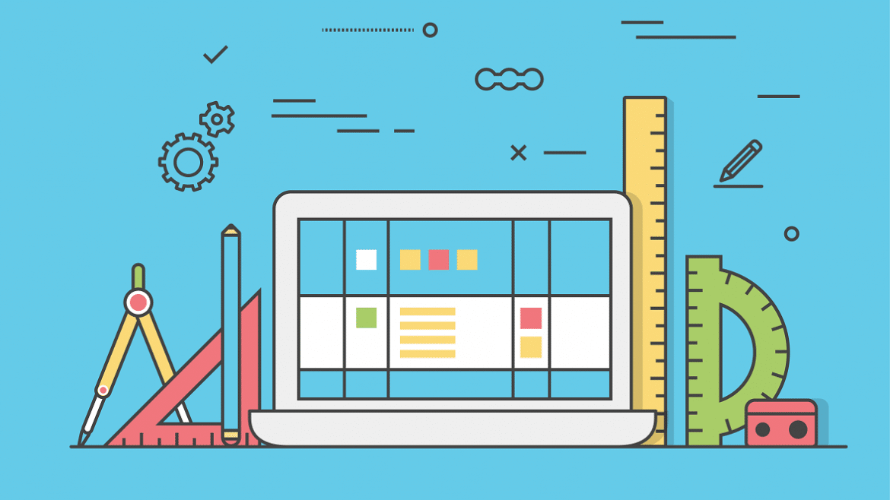

UI
Implement Visual language into functional prototypes and applications. Integrate style guides, build assets, and define the visuals.

UX
Translating strategy to ideas. Evolving ideas, iterating conceptions, sketching, drafting, and finally visualising the goal.